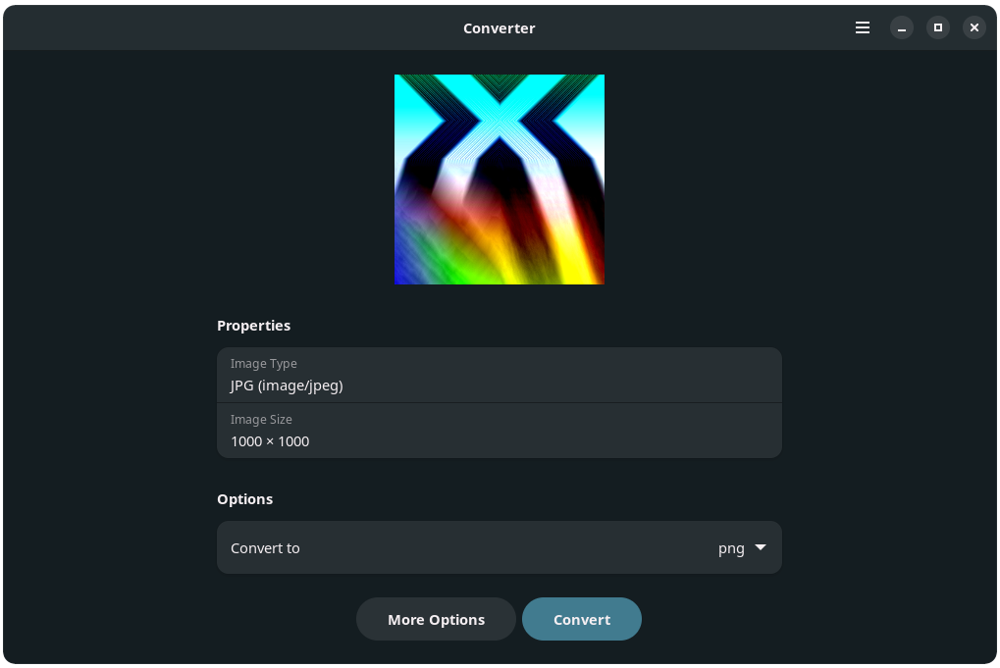
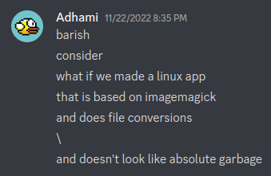

Convert Images with 'Converter' in Linux
The "Why?"
I have wasted a lot of my time searching for a reasonable tool that lets me convert images easily. It's also questionable if you should upload your images online to convert them, espicially if these websites are not open-source. I have found that ImageMagick tool is very good at this. However it's only CLI and almost all attempts to make a GUI for it turns out to be a very complicated design. I use GNOME desktop environment mainly and have decided to make a GUI tool based on the updated graphics tool GTK4 and Libadwaita.
Goals
First and foremost, it should have a simple interface that looks good with GNOME. Second, it should be completely offline and never make any web requests. Third, it should easily be installed from any Linux distro.
The "How?"
I don't have a prior experience developing applications for Linux. So I decided to start with something simpler. Here's a helpful advice, if you can't create app, find another app that achieves similar goals and fork it. Now you must review the code and learn from it. After you get a general idea of what's going on, you should be able to make the necessary changes to implement your app.
To follow the previously mentioned advice, I decided to fork Upscaler. The interface is very similar to what I have in mind, so I decided to give it a try.
Results
After a few weeks of work. I got Converter running and it's now available for all Linux users to install through Flathub as a Flatpak. The source code is available on Gitlab. It supports JPG, PNG, WEBP, SVG, HEIF/HEIC, BMP, AVIF, JXL, PDF, TIFF, PDF, GIF, and ICO. It also supports resizing images using multiple functions. It also supports splitting animated pictures into their individual frames. Finally, it supports batch processing of images. I made an application for Converter to be added into the GNOME circle. Wish me success in that!
What I learned
I learned how to develop GUI apps with GTK4 and Libadwaita. I learned how to maintain Flatpak apps on the Flathub. I learned how i18n works with gettext. I learned how to work with a team of strangers, reply to issues and pull requests.